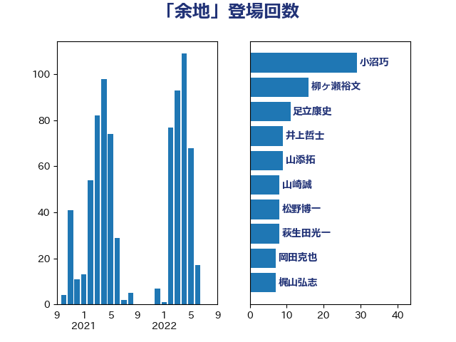

単語「余地」

| 小沼巧 | 立憲民主党 | 29 回 |
| 柳ヶ瀬裕文 | 日本維新の会 | 16 回 |
| 足立康史 | 日本維新の会 | 11 回 |
| 井上哲士 | 日本共産党 | 9 回 |
| 山添拓 | 日本共産党 | 9 回 |
| 山崎誠 | 立憲民主党 | 8 回 |
| 松野博一 | 自由民主党 | 8 回 |
| 萩生田光一 | 自由民主党 | 8 回 |
| 岡田克也 | 立憲民主党 | 7 回 |
| 梶山弘志 | 自由民主党 | 7 回 |
| 櫻井周 | 立憲民主党 | 7 回 |
| 田村貴昭 | 日本共産党 | 7 回 |
| 篠原豪 | 立憲民主党 | 7 回 |
| 舟山康江 | 国民民主党 | 7 回 |
| 奥野総一郎 | 立憲民主党 | 6 回 |
| 浅野哲 | 国民民主党 | 6 回 |
| 赤羽一嘉 | 公明党 | 6 回 |
| 金子恭之 | 自由民主党 | 6 回 |
| 北神圭朗 | 無所属 | 5 回 |
| 小林鷹之 | 自由民主党 | 5 回 |
| 小西洋之 | 立憲民主党 | 5 回 |
| 岸田文雄 | 自由民主党 | 5 回 |
| 階猛 | 立憲民主党 | 5 回 |
| 青柳仁士 | 日本維新の会 | 5 回 |
| 宮本岳志 | 日本共産党 | 4 回 |
| 岡本あき子 | 立憲民主党 | 4 回 |
| 平木大作 | 公明党 | 4 回 |
| 後藤祐一 | 立憲民主党 | 4 回 |
| 林芳正 | 自由民主党 | 4 回 |
| 枝野幸男 | 立憲民主党 | 4 回 |
| 沢田良 | 日本維新の会 | 4 回 |
| 熊田裕通 | 自由民主党 | 4 回 |
| 赤嶺政賢 | 日本共産党 | 4 回 |
| 音喜多駿 | 日本維新の会 | 4 回 |
| 馬場伸幸 | 日本維新の会 | 4 回 |
| 井上信治 | 自由民主党 | 3 回 |
| 伊波洋一 | 無所属 | 3 回 |
| 伊藤俊輔 | 立憲民主党 | 3 回 |
| 大塚耕平 | 国民民主党 | 3 回 |
| 大西健介 | 立憲民主党 | 3 回 |
| 守島正 | 日本維新の会 | 3 回 |
| 宮口治子 | 立憲民主党 | 3 回 |
| 小泉進次郎 | 自由民主党 | 3 回 |
| 小野泰輔 | 日本維新の会 | 3 回 |
| 小野田紀美 | 自由民主党 | 3 回 |
| 川田龍平 | 立憲民主党 | 3 回 |
| 梅村みずほ | 日本維新の会 | 3 回 |
| 浜田聡 | NHK党 | 3 回 |
| 玉木雄一郎 | 国民民主党 | 3 回 |
| 石井苗子 | 日本維新の会 | 3 回 |
| 舞立昇治 | 自由民主党 | 3 回 |
| 逢沢一郎 | 自由民主党 | 3 回 |
| 鈴木淳司 | 自由民主党 | 3 回 |
| 高木かおり | 日本維新の会 | 3 回 |
| 高橋光男 | 公明党 | 3 回 |
| 麻生太郎 | 自由民主党 | 3 回 |
| 一谷勇一郎 | 日本維新の会 | 2 回 |
| 上川陽子 | 自由民主党 | 2 回 |
| 丸川珠代 | 自由民主党 | 2 回 |
| 井坂信彦 | 立憲民主党 | 2 回 |
| 吉川元 | 立憲民主党 | 2 回 |
| 吉田宣弘 | 公明党 | 2 回 |
| 吉田忠智 | 立憲民主党 | 2 回 |
| 吉良よし子 | 日本共産党 | 2 回 |
| 吉良州司 | 無所属 | 2 回 |
| 塩川鉄也 | 日本共産党 | 2 回 |
| 大串博志 | 立憲民主党 | 2 回 |
| 安江伸夫 | 公明党 | 2 回 |
| 小沢雅仁 | 立憲民主党 | 2 回 |
| 山下芳生 | 日本共産党 | 2 回 |
| 山下雄平 | 自由民主党 | 2 回 |
| 山口壯 | 自由民主党 | 2 回 |
| 岸信夫 | 自由民主党 | 2 回 |
| 斎藤嘉隆 | 立憲民主党 | 2 回 |
| 新垣邦男 | 立憲民主党 | 2 回 |
| 梅谷守 | 立憲民主党 | 2 回 |
| 武田良太 | 自由民主党 | 2 回 |
| 江島潔 | 自由民主党 | 2 回 |
| 河野義博 | 公明党 | 2 回 |
| 渡辺創 | 立憲民主党 | 2 回 |
| 熊谷裕人 | 立憲民主党 | 2 回 |
| 片山大介 | 日本維新の会 | 2 回 |
| 田名部匡代 | 立憲民主党 | 2 回 |
| 田島麻衣子 | 立憲民主党 | 2 回 |
| 田村まみ | 国民民主党 | 2 回 |
| 田村智子 | 日本共産党 | 2 回 |
| 石川香織 | 立憲民主党 | 2 回 |
| 礒崎哲史 | 国民民主党 | 2 回 |
| 福山哲郎 | 立憲民主党 | 2 回 |
| 米山隆一 | 立憲民主党 | 2 回 |
| 茂木敏充 | 自由民主党 | 2 回 |
| 落合貴之 | 立憲民主党 | 2 回 |
| 藤巻健太 | 日本維新の会 | 2 回 |
| 西岡秀子 | 国民民主党 | 2 回 |
| 西村康稔 | 自由民主党 | 2 回 |
| 西野太亮 | 自由民主党 | 2 回 |
| 西銘恒三郎 | 自由民主党 | 2 回 |
| 赤木正幸 | 日本維新の会 | 2 回 |
| 逢坂誠二 | 立憲民主党 | 2 回 |
| 重徳和彦 | 立憲民主党 | 2 回 |
| 野上浩太郎 | 自由民主党 | 2 回 |
| 野田聖子 | 自由民主党 | 2 回 |
| 鈴木俊一 | 自由民主党 | 2 回 |
| 鈴木庸介 | 立憲民主党 | 2 回 |
| 鈴木憲和 | 自由民主党 | 2 回 |
| 高木啓 | 自由民主党 | 2 回 |
| おおつき紅葉 | 立憲民主党 | 1 回 |
| たがや亮 | れいわ新選組 | 1 回 |
| ながえ孝子 | 無所属 | 1 回 |
| 三宅伸吾 | 自由民主党 | 1 回 |
| 三木圭恵 | 日本維新の会 | 1 回 |
| 中島克仁 | 立憲民主党 | 1 回 |
| 中川宏昌 | 公明党 | 1 回 |
| 中川正春 | 立憲民主党 | 1 回 |
| 五十嵐清 | 自由民主党 | 1 回 |
| 井林辰憲 | 自由民主党 | 1 回 |
| 仁木博文 | 無所属 | 1 回 |
| 伊藤孝恵 | 国民民主党 | 1 回 |
| 伊藤岳 | 日本共産党 | 1 回 |
| 住吉寛紀 | 日本維新の会 | 1 回 |
| 加田裕之 | 自由民主党 | 1 回 |
| 勝部賢志 | 立憲民主党 | 1 回 |
| 北村経夫 | 自由民主党 | 1 回 |
| 古川俊治 | 自由民主党 | 1 回 |
| 古川禎久 | 自由民主党 | 1 回 |
| 古賀友一郎 | 自由民主党 | 1 回 |
| 吉川沙織 | 立憲民主党 | 1 回 |
| 吉田久美子 | 公明党 | 1 回 |
| 和田政宗 | 自由民主党 | 1 回 |
| 和田有一朗 | 日本維新の会 | 1 回 |
| 嘉田由紀子 | 無所属 | 1 回 |
| 国光あやの | 自由民主党 | 1 回 |
| 國重徹 | 公明党 | 1 回 |
| 坂本哲志 | 自由民主党 | 1 回 |
| 堤かなめ | 立憲民主党 | 1 回 |
| 塩田博昭 | 公明党 | 1 回 |
| 大串正樹 | 自由民主党 | 1 回 |
| 大島敦 | 立憲民主党 | 1 回 |
| 宮崎政久 | 自由民主党 | 1 回 |
| 宮崎雅夫 | 自由民主党 | 1 回 |
| 宮路拓馬 | 自由民主党 | 1 回 |
| 寺田静 | 無所属 | 1 回 |
| 小森卓郎 | 自由民主党 | 1 回 |
| 小田原潔 | 自由民主党 | 1 回 |
| 山井和則 | 立憲民主党 | 1 回 |
| 山本剛正 | 日本維新の会 | 1 回 |
| 山田俊男 | 自由民主党 | 1 回 |
| 山田太郎 | 自由民主党 | 1 回 |
| 山田賢司 | 自由民主党 | 1 回 |
| 山際大志郎 | 自由民主党 | 1 回 |
| 岩渕友 | 日本共産党 | 1 回 |
| 岩田和親 | 自由民主党 | 1 回 |
| 川崎ひでと | 自由民主党 | 1 回 |
| 市村浩一郎 | 日本維新の会 | 1 回 |
| 平沼正二郎 | 自由民主党 | 1 回 |
| 後藤茂之 | 自由民主党 | 1 回 |
| 志位和夫 | 日本共産党 | 1 回 |
| 新藤義孝 | 自由民主党 | 1 回 |
| 有村治子 | 自由民主党 | 1 回 |
| 末松信介 | 自由民主党 | 1 回 |
| 末松義規 | 立憲民主党 | 1 回 |
| 末次精一 | 立憲民主党 | 1 回 |
| 杉久武 | 公明党 | 1 回 |
| 杉尾秀哉 | 立憲民主党 | 1 回 |
| 杉本和巳 | 日本維新の会 | 1 回 |
| 杉田水脈 | 自由民主党 | 1 回 |
| 松原仁 | 立憲民主党 | 1 回 |
| 松沢成文 | 日本維新の会 | 1 回 |
| 柚木道義 | 立憲民主党 | 1 回 |
| 梅村聡 | 日本維新の会 | 1 回 |
| 森まさこ | 自由民主党 | 1 回 |
| 江田憲司 | 立憲民主党 | 1 回 |
| 河西宏一 | 公明党 | 1 回 |
| 河野太郎 | 自由民主党 | 1 回 |
| 泉田裕彦 | 自由民主党 | 1 回 |
| 浅田均 | 日本維新の会 | 1 回 |
| 浮島智子 | 公明党 | 1 回 |
| 清水真人 | 自由民主党 | 1 回 |
| 清水貴之 | 日本維新の会 | 1 回 |
| 渡辺猛之 | 自由民主党 | 1 回 |
| 牧原秀樹 | 自由民主党 | 1 回 |
| 牧山ひろえ | 立憲民主党 | 1 回 |
| 田中健 | 国民民主党 | 1 回 |
| 田嶋要 | 立憲民主党 | 1 回 |
| 白石洋一 | 立憲民主党 | 1 回 |
| 石垣のりこ | 立憲民主党 | 1 回 |
| 神谷裕 | 立憲民主党 | 1 回 |
| 福島みずほ | 社会民主党 | 1 回 |
| 福島伸享 | 無所属 | 1 回 |
| 福重隆浩 | 公明党 | 1 回 |
| 秋本真利 | 自由民主党 | 1 回 |
| 秋野公造 | 公明党 | 1 回 |
| 竹内真二 | 公明党 | 1 回 |
| 竹谷とし子 | 公明党 | 1 回 |
| 笠井亮 | 日本共産党 | 1 回 |
| 笹川博義 | 自由民主党 | 1 回 |
| 簗和生 | 自由民主党 | 1 回 |
| 細田健一 | 自由民主党 | 1 回 |
| 緑川貴士 | 立憲民主党 | 1 回 |
| 緒方林太郎 | 無所属 | 1 回 |
| 羽田次郎 | 立憲民主党 | 1 回 |
| 芳賀道也 | 国民民主党 | 1 回 |
| 菅義偉 | 自由民主党 | 1 回 |
| 菊田真紀子 | 立憲民主党 | 1 回 |
| 藤岡隆雄 | 立憲民主党 | 1 回 |
| 藤川政人 | 自由民主党 | 1 回 |
| 藤田文武 | 日本維新の会 | 1 回 |
| 西田昌司 | 自由民主党 | 1 回 |
| 谷合正明 | 公明党 | 1 回 |
| 豊田俊郎 | 自由民主党 | 1 回 |
| 足立敏之 | 自由民主党 | 1 回 |
| 輿水恵一 | 公明党 | 1 回 |
| 道下大樹 | 立憲民主党 | 1 回 |
| 野田佳彦 | 立憲民主党 | 1 回 |
| 野田国義 | 立憲民主党 | 1 回 |
| 長友慎治 | 国民民主党 | 1 回 |
| 高橋千鶴子 | 日本共産党 | 1 回 |
| 高良鉄美 | 無所属 | 1 回 |
| 鳩山二郎 | 自由民主党 | 1 回 |